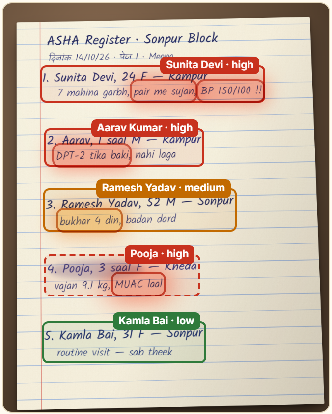
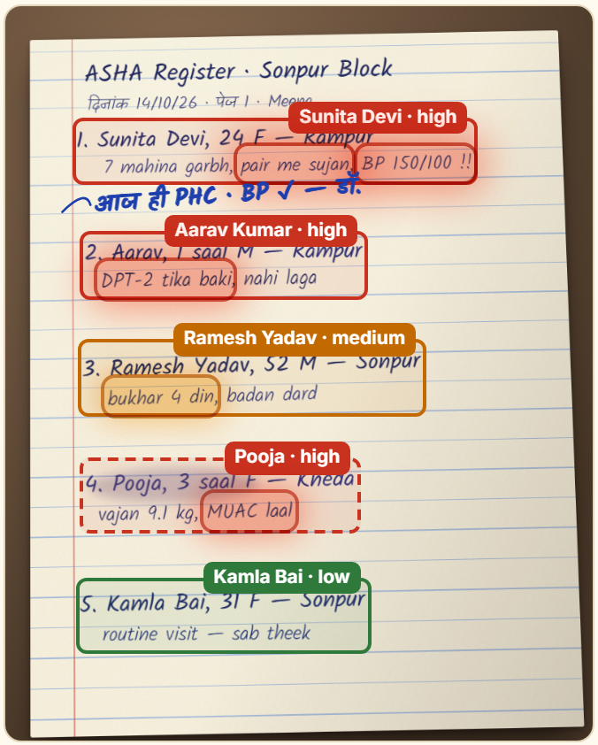
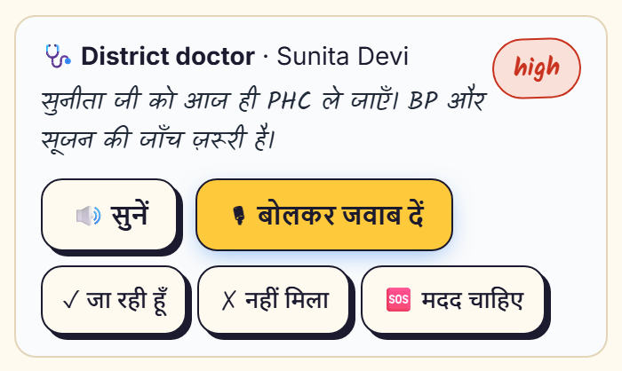
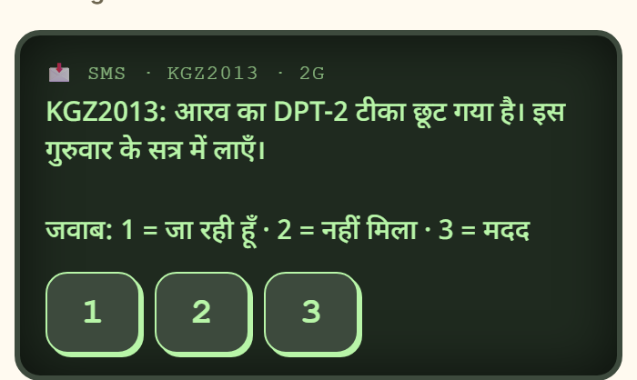
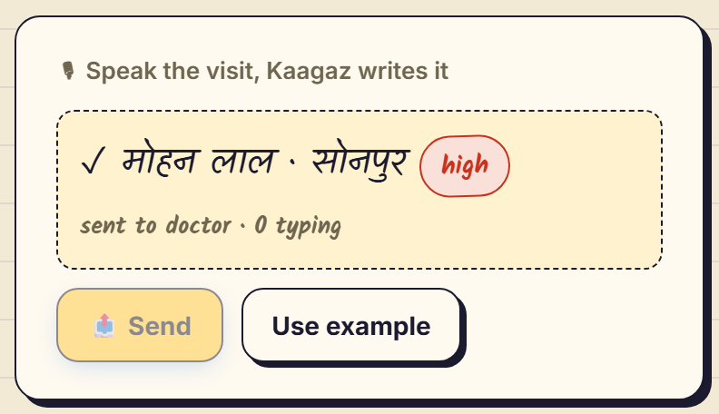
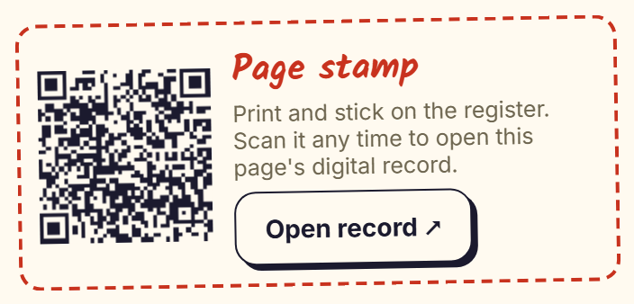
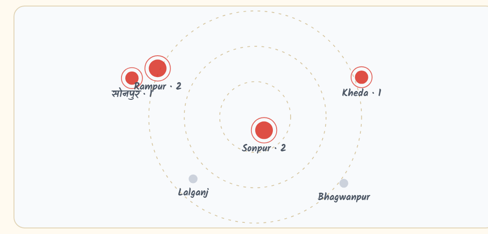

Kaagaz कागज़
Bridge the Gap · Devlympics Shunya 2026
Paper that
talks back.
कागज़ = paperKaagaz connects India's village health workers and their doctors, using the paper they already write on.
The gap
Two sides that should talk every day. They can't.
📒 ASHA worker
- Writes everything on paper
- Up to 11 registers
- Sees danger first, no doctor to ask
- Hindi, low signal
~21 daysand nothing comes back
🩺 District doctor
- Gets data weeks late
- Can't see who needs help today
- Spots outbreaks too late
- No way to reply to the village
the problemIndia's 1 million ASHA workers record village health on paper. Doctors see it weeks later, and nothing ever goes back.
The bridge
Keep the paper. Lose the delay.
1📷
Snap
The worker photographs today's register page. No typing, no new forms.
➜
2✨
AI reads
Gemini reads Hindi + English handwriting and flags danger signs.
➜
3🩺
Doctor acts
Urgent patients first. One tap to send an instruction.
➜
4🔊
Voice back
It reaches the worker as a Hindi voice note. She replies by speaking.
howOne photo goes up. Help comes back down, in Hindi, by voice. The bridge works both ways.
Why hasn't this been solved?
Every tool so far adds an app.
| What they do | The loophole |
|---|
| ANMOL · SAMASTAGovt apps | Digital diary, 485 → 134 fields | Still typing. Paper never goes away, so double work |
| Khushi Baby · CommCareNGO platforms | Offline forms, NFC records | Worker becomes a form filler; data flows one way |
| Wadhwani AI · Doxper · NinxAI tools | Single-task AI, digital pens | Separate silos, special hardware, nothing comes back |
| Kaagaz | Reads the paper she already keeps | 0 new typing · two-way · FHIR into ABDM |
our edgeEveryone builds a new app. We built no new app for the worker and no new database for the government: just the bridge between them.
Step 1 · Paper → AI
The AI shows why.
Gemini reads every row and highlights the exact handwritten words that make a patient urgent, right on the photo.

BP 150/100 = danger
X-ray"BP 150/100" and "pair me sujan" (swollen feet) glow red: possible pre-eclampsia. No black box, the evidence is on the paper.
Step 2 · AI asks back
Something missing? It asks.
If a detail would change the decision, the phone asks the worker out loud in Hindi. Her spoken answer updates the patient instantly.
conversation"Is Ramesh vomiting or bleeding?" She says "हाँ", and Ramesh jumps to urgent on the doctor's screen.
Step 3 · Doctor
A human always checks.
The doctor sees the AI's reading next to the original handwriting, fixes anything wrong, then sends advice, never a prescription. Every record exports as FHIR R4 for ABDM.
trustUnsure readings are flagged for a human. AI speeds the doctor up; it never decides alone.
Step 4 · Back to the village
The paper talks back.
The instruction arrives as a Hindi voice note, and the doctor's reply is handwritten into the margin of her own page.


loop closed"सुनीता जी को आज ही PHC ले जाएँ." She replies by voice: "हाँ, अभी जा रही हूँ." The doctor sees it.
Built for real villages, not just demos
Works where the network doesn't.

📟 SMS-only phones
No data? The instruction arrives as an SMS. Reply with one key: 1, 2 or 3.

🎙 Speak, don't write
Say the visit in Hindi; it becomes a triaged record.

🔗 QR stamp
A sticker on the paper opens its digital record, forever linked.

🚨 Outbreak alarm
3 fever cases in one village, even across pages, raise an alarm early.
real worldWorks offline (pages queue and sync later), installs like an app, and hides names before projecting.
The one number
Paper → doctor → voice → reply
0:21
with Kaagaz · both ways, measured live
impactFrom weeks to seconds, and for the first time, the village hears back.
Kaagaz · कागज़
Same paper. Same worker.
Now the paper talks back.
Gemini 2.5 Flash VisionHL7 FHIR R4 · ABDMNode.js · zero dependenciesWeb Speech · HindiOffline PWAOpen source
nextAny paper register (anganwadi, school, ration) can be bridged the same way. No new hardware. No new habits.